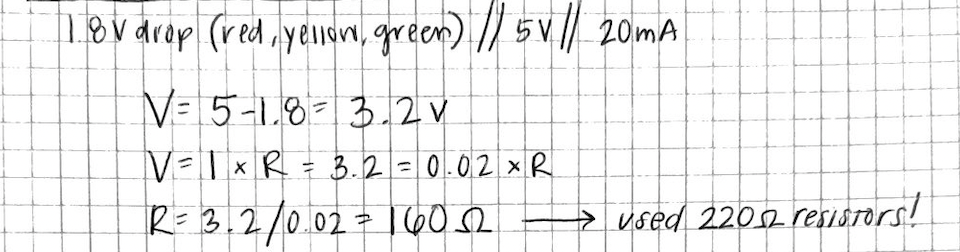
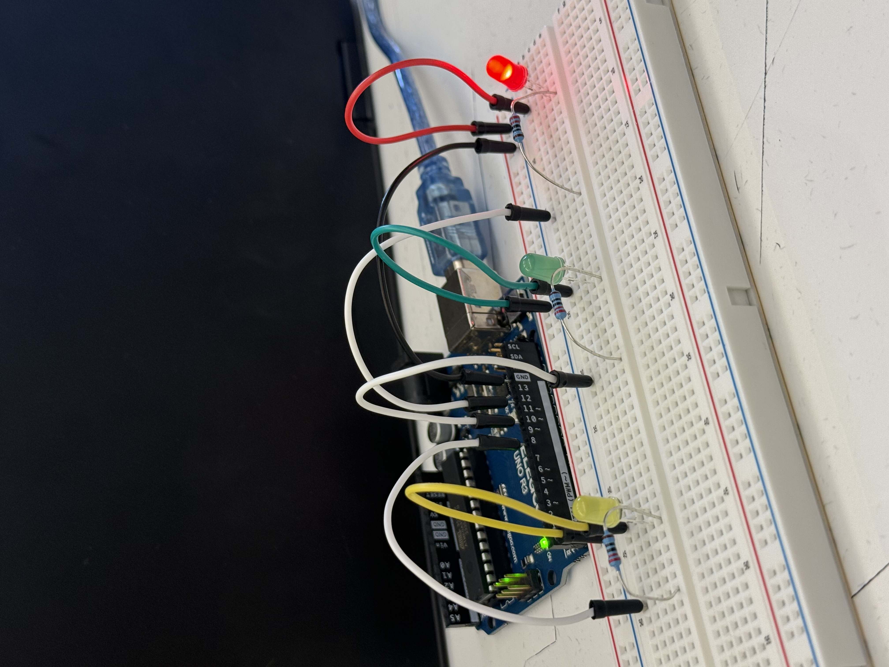

My Schematic
 Image of my schematic with labeled components, including pins, resistors, LEDs, and ground.
Image of my schematic with labeled components, including pins, resistors, LEDs, and ground.
Resistance Calculation
 Image of my calculation for the resistance needed for my circuit, which is 160 ohms. I used 220 ohm resistors, which is the closest standard resistor with a value over 160 ohms.My Circuit
 Image of my physical circuit, "Blink", with all components connected.My Firmware
My Circuit's Operation
Video of my circuit in operation, with all three LEDs blinking- yellow, green, and red.Additional Questions
1: Draw a chart where the X axis is time and the Y axis is voltage.
Draw 3 lines representing the voltage across an LED with analogWrite(led, 64), analogWrite(led, 128), and analogWrite(led, 255).

2: Given your schematic, circuit, and firmware,
assuming the only thing that draws current is your LEDs,
how long would your circuit run if powered by a 1200 mAh battery?
Answer
3: Measure and record the actual voltage across one of your LEDs when it's on.
How does this compare to the theoretical forward voltage for your LED color?
Answer
4: Did you use AI tools in completing this assignment?
If yes, please provide details on how/when, as well as a brief reflection.
If no, you can either leave this question blank, or provide other information if you'd like.
Answer